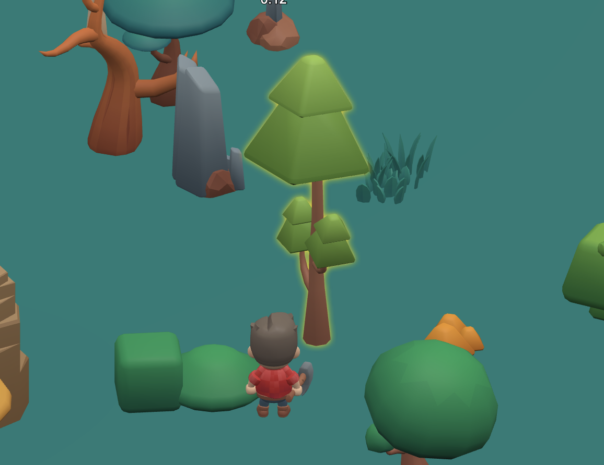
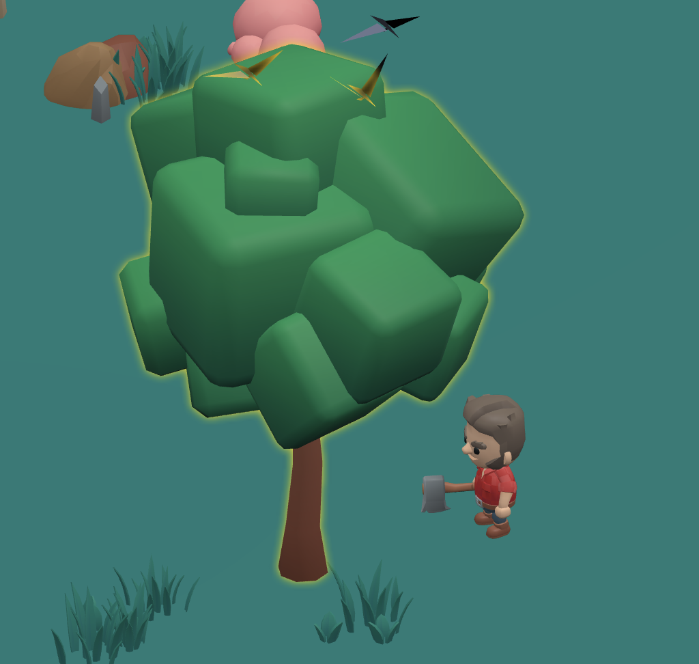
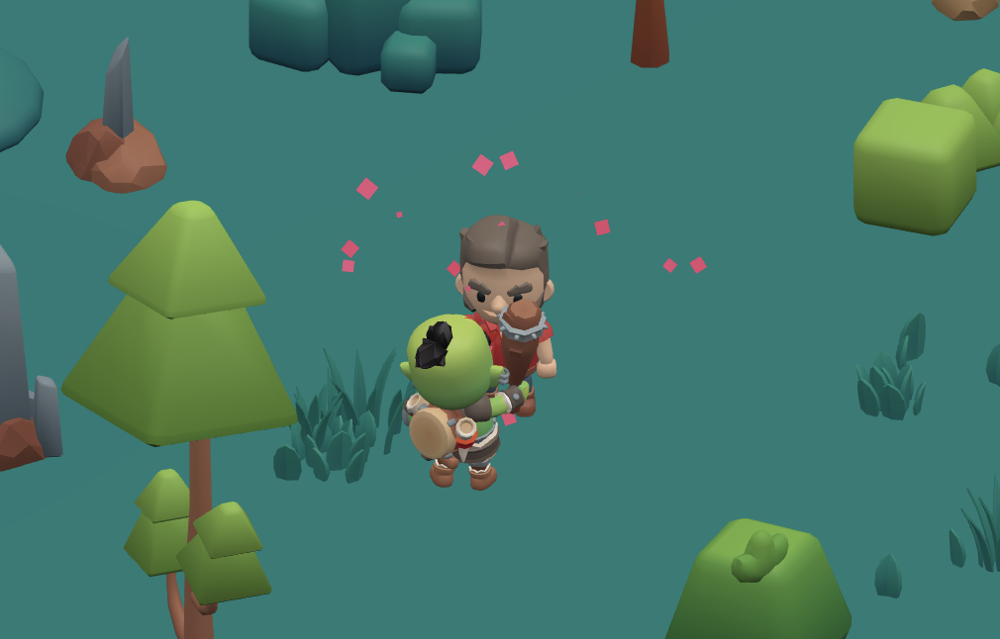
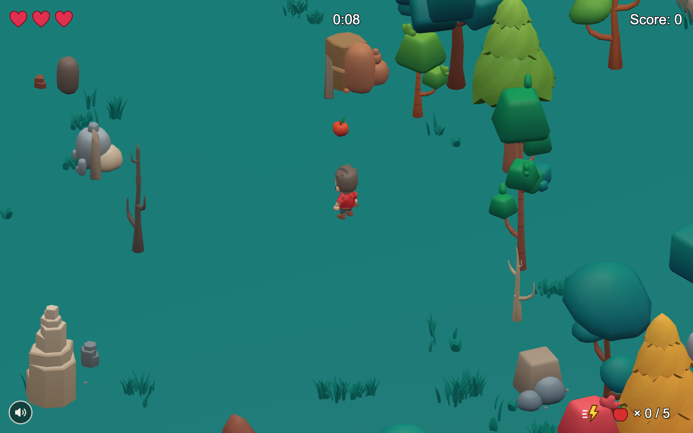
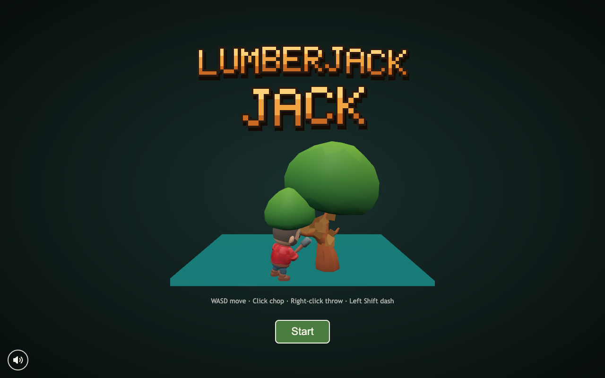

Endless Forest Action
Guide Jack the Lumberjack through a peaceful forest. Enjoy the sounds of nature, chop down trees, avoid the goblin.

Chop Trees
Fell trees of every shape, size, and color. Small trees drop in one hit, the biggest take three, and bigger trees are worth more points. A glowing outline shows which trees are in reach.

Watch Your Back
The goblin chases you through the forest. Dash out of reach, pelt him with apples to stun him, or slow him down with your axe. Three club hits and your run is over.

Endless Forest
The forest stretches on in every direction, packed with colorful trees, rocks, bushes, and lakes. Keep moving.

Relax
Birdsong, a gentle breeze, and soft rain set a peaceful mood while you chop, with flocks of birds flying overhead.

Simple controls: move, chop, throw, and dash
Explore an endless, colorful forest
Glowing trees are within reach of your axe
Keep your distance from the goblin
Every tree you fell adds to your score
Grab your axe and head into the forest, free in your browser.